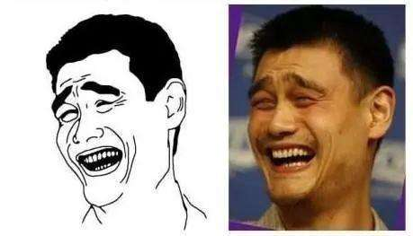

目录
(1) 陈奕迅（Eason Chan）
(2) 简介
(3) 作品
(3) 测试

简介
[1] 华语流行乐男歌手、演员、作曲人，毕业于英国金斯顿大学。1995年参加第14届新秀歌唱大赛并获得冠军，同年正式出
道。1996年发行个人首张专辑《陈奕迅》。1997年主演个人首部电影《旺角大家姐》。1998年凭借歌曲《天下无双》在乐坛
获得关注。2000年发行的歌曲《K歌之王》奠定其在歌坛的地位
主要资料
[2] 2001年发行流行摇滚风格的专辑《反正是我》。2003年发行个人首张概念专辑《黑·白·灰》，专辑中的歌曲《十年》
获得第4届音乐风云榜十大金曲奖
[3] 同年凭借专辑《Special Thanks to》获得第14届台湾金曲奖最佳国语男歌手以及
最佳专辑奖
[4] 2005年发行粤语专辑《U87》，专辑中的歌曲《浮夸》成为其歌唱生涯的代表作品之一。2006年起连续九年获得叱咤
乐坛流行榜颁奖典礼我最喜爱的男歌手奖
[5] 2007年获得十大劲歌金曲最受欢迎男歌星奖
[6] 2010年凭借剧情片《金钱帝国》获得星光大典港台年度电影男演员奖
[7] 2012年发行舞曲风格的粤语专辑《…3mm》。2015年凭借专辑《米·闪》获得第26届台湾金曲奖最佳国语男歌手奖
[8-9] 2016年举行“Another Eason's LIFE世界巡回演唱会”
[10] 2018年凭借专辑《C'mon in~》获得第29届台湾金曲奖最佳国语男歌手奖
[11-12] 同年发行专辑《L.O.V.E.》
[13] 同年，其主演的电影《卧底巨星》上映
[14] 2020年7月11日在香港举办《Live is so much better with Music Eason Chan Charity Concert》慈善音
乐会
作品：
《约定》
《遥远的她》
《孤独患者》
《富士山下》
《1987》
《红玫瑰》
《阴天快乐》
《好久不见》